Templates#
Reference for the template directories under templates/: which directory bakes which shape, what each one carries, the Squire-owned deploy copy, and the rules the generator applies before it writes anything. Pick a shape first in Pick a shape, then come back here for the exact values.
Five jars on the shelf, all five full in 0.1.

The template directories#
| Directory | Shape | Status in 0.1 |
|---|---|---|
raw/ |
Raw PHP with WayneUI's standalone path | generates |
raw-vue/ |
Raw PHP + Vue SPA over JSON, layered over raw/ |
generates |
laravel-blade/ |
Laravel + Blade | generates |
laravel-blade-vue/ |
Laravel + Blade + Vue islands | generates |
laravel-inertia/ |
Laravel + Inertia/Vue | generates |
squire/ |
Squire's exported deploy files, not a shape | installed as-is into every app |
The flags that select a shape:
| Flags | Permutation |
|---|---|
(none) or --raw |
Raw PHP with WayneUI's standalone path |
--raw --vue |
Raw PHP + Vue SPA over JSON |
--laravel |
Laravel + Blade |
--laravel --vue |
Laravel + Blade + Vue islands |
--laravel --inertia (or --inertia) |
Laravel + Inertia/Vue |
All five permutations generate in 0.1. --raw --vue is the raw PHP bake with a Vue 3 front end over it: PHP answers JSON under /api/, Vite builds the Vue app, and src/Vite.php loads it from the build or the dev server.
Bake commands for the five shapes:
raw
sourdough new my-app --raw
raw + vue
sourdough new my-app --raw --vue
laravel
sourdough new my-app --laravel
laravel + vue
sourdough new my-app --laravel --vue
inertia
sourdough new my-app --inertia
What each template carries#
raw/#
- Pins WayneUI 2.0.8 (
https://wayneui.apps.wayne.edu/v2/releases/2.0.8/wayne-ui.php) instead of fetching the floatingmainbranch copy. - Ships Pinstripe's coding standard:
pint.json(the per preset, with the fetchedpublic/wayne-ui.phpkept out andvendorexcluded) andphpstan.neon(Pinstripe's raw preset, level 8 oversrc/andpublic/), withwaynestate/pinstripein require-dev and the extension-installer plugin allowed. - Ships
scripts(test,lint,fix,analyse,proctor,ci) andscripts-descriptions, so a generated raw app can run its own gate locally withcomposer ci, which runs test, lint, analyse, proctor and audit in that order. - Its
.gitlab-ci.ymlruns an explicitcomposer-cijob (composer install, thencomposer ci), mirroring the Laravel overlay, so PROCTOR sees acomposer ciin the pipeline instead of warning that no job runs it. - Ships
stubs/wayne-ui.php, a static-analysis stub for the run-time WayneUI functions (wsu_shell_start,wsu_shell_end) thatphpstan.neonscans throughscanFiles, socomposer ciin a freshly baked raw app no longer fails with function-not-found errors for functions that arrive only with the fetchedpublic/wayne-ui.php. - The front controller answers
404for any path but/(a short not-found page that keeps WayneUI's layout and links home) instead of rendering the home page for every URL;/upstays HELMET's and answers first. - Installs Squire's deploy files from
templates/squire/:build.sh,deployments/001-first-release.sh,scripts/release.sh,scripts/parity.sh,scripts/parity.ps1,health.php,public/up.php,docker-compose.squire.yml,.env.squire.example, and the.squire/build context. - Oracle: raw PHP apps run queries through the
App\Oraclehelper, which takes values only as binds and answers mistakes with plain sentences.
raw-vue/#
sourdough new --raw --vue copies raw/ first, then raw-vue/ over it, so the two raw shapes share the same Squire files, Pinstripe checks, Oracle helper, Playbook and ADVISOR wiring. The manifest records the template as raw-vue.
public/index.phpboots HELMET, the session and SESAME exactly asraw/does. Paths under/api/answer JSON:/api/mereturns the signed-in user (usernameandname), an unknown endpoint is a JSON404, and a request without a session is a JSON401instead of a redirect to CAS./sends the page that loads the Vue app; any other path sends the same page with a404, and Vue says the page does not exist.src/Vite.phpprints the stylesheet,modulepreloadand script tags forresources/js/app.jsfrompublic/build/manifest.json(imported chunks and their CSS included), each with HELMET's CSP nonce. Whilenpm run devruns,public/hotholds the dev server's origin and the helper points at it instead, and adds it to the CSP; withAPP_ENV=productionthe hot file is ignored.tests/ViteTest.phpcovers both paths.package.jsonpins@waynestate/wayne-ui-cssand@waynestate/wayne-ui-vue2.0.8 exactly, as the Inertia shape does, with Vue 3 and Vite 6.resources/css/app.cssimports WayneUI's layereddist/wayne-ui.css, andresources/js/App.vuedraws the page with WayneUI's app bar, environment ribbon, cards and footer, served from the app's own origin (no CDN).vite.config.jsbuilds intopublic/buildwith the manifest at its top, keepspublic/(PHP's document root) out of the copy, and writes and removespublic/hotaround the dev server..gitignoreadds/node_modules/,/public/build/and/public/hot: Squire's release script runsnpm ciandnpm run buildoncepackage-lock.jsonis committed.- Drops
stubs/wayne-ui.phpandphpstan.neon'sscanFiles: Vue draws the chrome, so there is no fetchedpublic/wayne-ui.php. - Its
.gitlab-ci.ymladds afrontendjob (npm install,npm run build) to the raw pipeline.
laravel-blade/#
- A fresh Laravel skeleton from Composer, the laravel-blade overlay, the stack packages, Squire's laravel deploy files and the manifest.
- Ships
app/Providers/AppServiceProvider.phpwithSchema::defaultStringLength(191), so string columns stay inside Citadel's MySQL 5.6 index limit (PROCTORmysql56-string-default). - The views read the signed-in user as an array (
$user['name']), because SESAME'sSesame::user()returns an array, not an object. - Next steps:
composer install,cp .env.example .env,php artisan key:generate,php artisan migrate,php artisan serve.
laravel-blade-vue/#
- The Laravel + Blade bake under a front-end layer: Vite with the Vue plugin, a
resources/js/app.jsregistry that mounts a Vue 3 app on every[data-vue-island]element, and a Counter island live on the dashboard view. - Ships
tests/Feature/ExampleTest.phpwith$this->withoutVite(), socomposer ciin a freshly baked islands app does not fail on the missing Vite manifest beforenpm run buildhas run. - Next steps: the Laravel + Blade steps plus
npm installandnpm run build.
laravel-inertia/#
- The same Laravel skeleton, the laravel-inertia overlay (Inertia pages rendered by Vue, Ziggy routes, the stack packages), Squire's laravel deploy files and the manifest.
- Inertia 3 on both sides:
inertiajs/inertia-laravel^3.0and@inertiajs/vue3^3.0. The root view marks its<title>withdata-inertia, Inertia hands the first page to Vue in a<script type="application/json">element (data, not code, so HELMET's CSP has nothing to admit), and no Axios: the pages talk through Inertia's own client. Addaxiostopackage.jsononly when your own code imports it.resources/js/app.tshands HELMET's per-request nonce (read from the pre-paint script) to Inertia'snonceoption, so the progress bar's injected styles pass the CSP. - Ships
AppServiceProvider(string length 191 for Citadel's MySQL 5.6) and atests/TestCase.phpthat writes a stub Vite manifest, so view tests boot without a build. - The
.gitlab-ci.ymlcarries theziggyjob: it regeneratesresources/js/ziggy.*and fails on any diff, so the route list that ships inside the Vite bundle always matches the routes. - The overlay allows
phpstan/extension-installer; the appended SESAME and HELMET env keys ship commented out (exceptSESAME_DRIVER=fake) so package defaults hold instead of being overridden by empty values.config/sesame.phpdefaultsSESAME_FAKE_USERNAMEtojane.doe, so the fake driver has a non-empty username. - Next steps: the Laravel + Blade steps plus
npm installandnpm run build.
Shared wiring in every app#
| Part | What lands in the app |
|---|---|
| Stack packages | HELMET ^0.4, SESAME ^0.5, PROCTOR ^0.7 (its composer proctor script is plain proctor check: PROCTOR refuses --policy in CI since 0.6 and finds CREED's released policy in vendor/waynestate/creed by itself; 0.7 adds proctor gate, which the Squire kit's release script runs). The raw shapes also require Guzzle and nyholm/psr7, the HTTP client and factory the cas driver checks tickets with |
| Playbook | waynestate/playbook in require, the VCS repository, config.gitlab-domains so Composer sends your token to git.wayne.edu, the seven setting names in .env.example, a composer playbook script that shows whether Playbook is installed, and a "WSU values (PLAYBOOK)" README section that explains how to get read access |
| ADVISOR | waynestate/advisor in require-dev, .mcp.json git-ignored (a client config starts a program for whoever opens the project), a README "ADVISOR" section; install with php vendor/bin/advisor install --client=claude --write |
| Preflight | .gitlab-ci.yml pins the Preflight CI components to the 0.2.0 release SHA (7d4f6dad9c90c4f2b2aaf50fdde2a43dbdc5def1, with the tag in a trailing comment), because PROCTOR's preflight-pinned check (since 0.4) wants a 40-hex SHA |
| Oracle | wired but dormant: ORACLE_USERNAME, ORACLE_PASSWORD, and either ORACLE_TNS or ORACLE_HOST, ORACLE_PORT, ORACLE_SERVICE_NAME ship commented out in .env.example; while they are empty, nothing connects and nothing errors. Laravel apps check the wiring with php artisan oracle:check |
| Manifest | .sourdough/manifest.json: the Sourdough version, the template, the answers you chose, and a sha256 hash of every file, each marked managed or seeded |
| Plan | .sourdough/plan.yaml: the plan the app was baked from, written after the bake. Not in the manifest, so neither managed nor seeded; feed never touches it. See The saved plan |
Seeded files are .env.example and README.md: Sourdough wrote them once and you own them now. Managed files belong to Sourdough; the manifest is the record sourdough feed refreshes, merging in any edits you made. See The manifest.
The Squire-owned copy (templates/squire/)#
The deploy files in your app come from Squire's exported copy, checked into this repository at templates/squire/: raw/, laravel/, static/, vue/, catalog.json, manifest.json. The copy is Squire 0.6.0's kit: its scripts/release.sh runs PROCTOR's deploy gate (proctor gate) right after composer audit, before the frontend build and the migrations, and writes the verdict to storage/squire/proctor-gate.json (SQUIRE_PROCTOR_RECORD_DIR), the baseline the next release is ratcheted against. Squire owns those files; Sourdough never hand-edits them, installs them as-is and records them in the manifest, so you never edit them by hand.
| Command | What it does |
|---|---|
composer squire-copy:sync |
rewrites the copy from the installed waynestate/squire package (dev dependency ^0.6) |
composer squire-copy:check |
exits 1 when the committed copy has drifted; part of composer ci |
When Squire's templates change, regenerate the copy from a Squire checkout, then verify it:
php ../squire/bin/export-templates.php --to=../sourdough/templates/squire
php ../squire/bin/export-templates.php --to=../sourdough/templates/squire --check
Commit the refreshed copy with the Squire commit in the message, and add a CHANGELOG line.
Rules the generator applies#
From the best-practices notes, section 1 (Generating a project):
| Rule | What it requires | Stack today |
|---|---|---|
| Make the permutation an explicit, validated input | take the permutation from flags (--raw, --vue, --laravel, --inertia) and refuse combinations that make no sense, such as --inertia without --laravel |
Documented; step 1 plans tests for every row and for the invalid combinations |
Offer --dry-run, and make it write nothing |
print the plan (files, packages, commands) and change nothing on disk | Documented; step 1 plans a test that --dry-run writes nothing |
| Refuse a non-empty target | refuse to generate into a directory that already has files; if overwriting is ever allowed, require a --force flag and prompt only when the session is interactive |
Documented; there is no --force design yet |
| Use exit codes that scripts can rely on | 0 on success and distinct non-zero codes for the main failure modes, documented; PROCTOR uses 0 pass, 1 fail, 2 tool error | Not yet; pick one meaning for 2 across the stack before Sourdough ships |
| Keep output friendly to people and to machines | results to stdout and logs, warnings and errors to stderr, --json for the plan, color off when output is not a terminal, when NO_COLOR is set, or with --no-color, prompt only when stdin is a terminal, and --no-input so CI and agents never hang |
Not yet |
| Test the generator on every permutation, in temp directories | generate each permutation into a temp directory and compare the result with a stored snapshot; test commands through a tester class rather than a real terminal | Documented; Laravel paths need the network, so their tests run in a pipeline job instead of the unit suite |
| Treat names, paths and templates as untrusted input | check <dir> and any app or vendor name against an allow-list before the value reaches a file name, a composer.json or a command line; refuse any write whose resolved path falls outside the target directory; keep templates as data: placeholder substitution only, with no code in a template running during generation |
Enforced for names: RawGenerator::assertValidName() checks every name (letter or number first; then letters, numbers, spaces, dots, dashes and underscores; at most 63 characters) before generation touches the disk, and the test suite generates with hostile names (quotes, backslash, newline, NUL byte, {{app_slug}}, path traversal, 64 characters, empty, dashes only, leading dash or dot, a Unicode look-alike), asserting the exception and an absent or empty target dir. Paths stay inside the target by construction: the slug is [a-z0-9-] only and every write path is built under the target dir |
| Make the "new app" page and the CLI one engine | the page calls the same plan code as sourdough new --dry-run --json, shows the equivalent command, validates on the server with the rules above, and returns the same archive the CLI would write; a snapshot test compares the two |
Documented for the page itself; Not yet for the shared-engine rule |